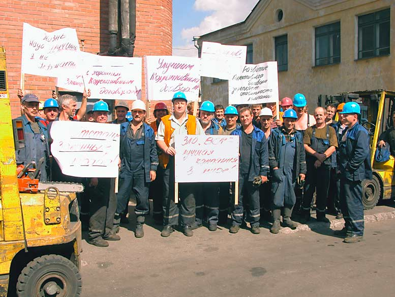

О БОРЬБЕ РАБОЧИХ
ЗА СОЦИАЛЬНОЕ РАЗВИТИЕ
Попов Михаил Васильевич,
доктор философских наук, профессор по кафедре экономики и права,
президент Фонда Рабочей Академии

К вопросу о том, как реализовывать интересы работников на предприятиях. В крупном производстве решать такие вопросы легче. Материальной основой капитализма является крупное машинное производство. С другой стороны, и на крупных предприятиях бывают маленькие профсоюзы. Они всегда будут маленькие, если люди, которые состоят в этих профсоюзах, думают: «Мы маленькие, какой смысл в том, что мы сейчас будем делать проект коллективного договора, у нас его все рано не примут». Поэтому они вечно маленькие.
Для того чтобы стать большим, нужно поставить большие задачи. Сколько человек пишет проект коллективного договора? Один. Для спорных ситуаций есть общий рецепт: вы сделайте то, что зависит от вас, потому что от вас зависит не всё. Мы попали в ситуацию неопределенности. Мы не знаем, насколько сильные факторы нам будут противостоять, выиграем мы или проиграем. Так происходит на войне, в классовой борьбе, в борьбе профсоюзной. Нужно развернуть все свои силы. И если победить не удалось, то совесть у вас чиста. А вот если вы занимаете другую позицию и не делаете то, что надо было сделать, то совесть будет у вас нечиста. Это я бы назвал умственной ленью или прикрытием того, что не сделал, и начинаю все объяснять сложностями. А у нас нет простых задач. Это первое.
Второе. Вам никто и никогда не расскажет, какие деньги есть у работодателя. Вот у докеров десятилетиями на переговорах профсоюз каждый раз ставит вопрос: «По закону вы нам обязаны предоставить информацию о доходах. Просим занести это в протокол. Ну, вы скажите, как есть, мы с вами поплачем». Нет, не говорят.
Возьмем государственные предприятия, которые организованы не как казенные, а как акционерные общества. Это не социалистические предприятия, ведь их принцип — приоритет личных интересов. Первое, что они делают при создании такого АО — ставят себе задачу, сколько себе сделать зарплату миллионов в месяц: в «Роснефти» зарплата членов правления — 17 млн. руб. в месяц, в «Газпроме» — 15 млн., в «РЖД» — 5 млн., в «Сбербанке» в 2007 г. — 3,7млн., в 2008г. (кризис!) — 3,4 млн. На 300 тыс. они стали получать меньше, как они скорбили! Это не ваши гроши, товарищи рабочие. Кириенко вам скажет свою зарплату? — Никогда. А глава «РЖД» до того дошел, что пошел к Медведеву и договорился никакой информации о своей зарплате в прессе не давать. А куда идут эти зарплаты с точки зрения экономики? — В затраты. Так вот, если все эти зарплаты перевести в затраты, прибыль организации будет маленькая и маленькие налоги от госкорпорации для государства. И в это самое время они предлагают поднимать экономику, отняв деньги у пенсионеров, дескать, это единственный источник.
Есть старое правило забастовщиков и переговорщиков: никогда не входите в положение работодателей. Когда продают электроэнергию, цену считают, исходя из затрат. Когда вы продаете рабочую силу, посчитайте ее стоимость и скидку, которую вы предоставляете работодателю. Но не до такой же степени скидку, что вы вообще нищими будете.
Если мы берем конкретный коллективный договор, то если в нем не прописана динамика зарплаты, на ее повышение никогда никто деньги не выделит. И наоборот, как только в коллективном договоре появляется механизм увеличения зарплаты, то поскольку, колдоговор — это локальный нормативный акт, что предусмотрено в нем — будьте любезны, предоставьте. Государственное предприятие так же, как и частное, должно соблюдать закон и выделять деньги на оплату затрат, связанных с выполнением коллективного договора, иначе это — нарушение закона. Нельзя отдавать это достижение, имеющее место в буржуазной России.
Глаза боятся, руки делают. Не надо себя запугивать, а надо идти и добиваться. Что делают представители буржуазии? Они стараются вас парализовать, чтобы вы ничего не делали. А они будут получать бешеные деньги на фоне нищеты и понижения зарплаты, тотального растаскивания всего и вся. На Сахалине миллиард наличными дали губернатору. Космодром Восточный — куда-то делись 14 млрд. рублей и их никто не ищет. А если предприятие частное, то тем более нужно выбивать свою зарплату у капиталиста. Как у работодателя докеров, миллиардера Лисина, который и не думал делиться, пока докеры не создали рабочие дружины для охраны порядка в соответствии с планом проведения забастовки и не поставили вопрос о национализации компании.
Конечно, лучше заключать коллективный договор не на год, а на три года с продлением еще на три, то есть в сумме на шесть. Почему? Это сохранение того уровня, которого вы уже добились. А если вы сделаете на год, то после года надо начинать все сначала. А ведь чтобы через год получить колдоговор, надо целый год вести работу. А что касается постоянных изменений, дополнений, вам закон дает право сразу же после заключения колдоговора начать переговоры по его изменению и дополнению.
Зачем отдельно печатать приложения к колдоговору? Вы соберите всё в один том, как сделали докеры. Там и основная часть, и все приложения. Они по юридической силе абсолютно ничем не отличаются, юридически они одинаковую силу имеют, они входят, все эти приложения, в состав коллективного договора. Но если вы их не напечатали вместе, то как бы потеряли приложения. Человек, который выступал за колдоговор, — он же сам участвовал в коллективных действиях. Поэтому надо каждому выдать текст колдоговора — каждому! Напечатать и выдать.
Понятно, что не все будут читать коллективный договор, но ни один человек не скажет: «Я не знаю, у меня нет проекта». И тогда сразу меняется картина, работник — полноправный участник всего процесса, в том числе процесса контроля за выполнением коллективного договора.
Надо, конечно, колдоговор читать. Я сам наблюдал такую картину в порту летом: 35 градусов жара, невозможно работать было. Я говорю: «А чего вы не берете свои 10 минут перерыва, у вас же в колдоговоре записано?» Они не знают, что они имеют право при известной температуре останавливать работу и делать перерывы. И не надо никого спрашивать, уже всё подписано.
Есть такое положение в Трудовом кодексе, которое мы выдвигали в своё время в проекте Трудового кодекса Фонда Рабочей Академии: если вам не уплачивают зарплату, вы приостанавливаете работу и пишете бумагу: «Я приостанавливаю работу до выплаты зарплаты», как написано в статье. После этого идете спокойно домой и ждете, когда вам пришлют бумагу от начальства, потому что вы обязаны выйти на работу на следующий день после того, когда вам письменно будет вручен документ о том, что завтра вам будет выплачена зарплата. Тогда вы обязаны на следующий день явиться на работу и приступить к работе, вот и все. Если это делать поодиночке, то это ничего не даст, тоже всем ясно. Правильно? Но, если цех или заметная группа в составе коллектива сделает это одновременно, конечно, тогда все решается.
Что касается создания профсоюзов, существует разные варианты. По закону об общественных объединениях достаточно 10 человек собрать, утвердить руководство и устав, придумать себе название. Работайте, пожалуйста. Юридического лица у вас не будет. Вам нужно юридическое лицо? Не нужно, потому что юридическое лицо будет обязано ходить сдавать налоговую отчетность все время и, во-вторых, быть истцом и ответчиком в суде. Вам хочется быть ответчиком в суде? Не хочется. Зачем тогда вам это делать? Не надо никакого юридического лица, то есть вы тихо-мирно создаете профсоюзную организацию.
Для профсоюза три человека достаточно. И вот некоторые люди собрались и бегут докладывать сразу начальству, что нас три человека. Не бегите. Создали профсоюз и делайте дальше, что вы хотите сделать. Сидите, пишите колдоговор. Сделайте такой договор, чтобы он был хороший, чтобы он людей привлёк. Потом идите, показывайте.
Вы думаете, что, если будете его показывать, то все это будут читать? Сделайте выжимку на одну страницу, показывайте. Проект колдоговора оставляйте и зачитывайте такие пункты, за которыми люди пойдут. И таким образом вы соберете голоса. Когда вами будет организовано голосование в поддержку этого проекта, сразу надо выбирать и делегатов на конференцию и принимать решения, что делегатам поручается отстаивать этот проект.
Рабочие — люди коллективистские. Если вы этого решения не примете, придет на конференцию начальник, отец родной, и скажет: «Ну чего вас тут мучать, я вам все повышу, все сделаю». И все развалится. Но если вы своим делегатам поручили, то, может, найдутся два-три таких, которые не выполнят поручения, но основная масса будет голосовать так, как договорились.
Есть еще и такой вариант. Вот вы создали организацию. Не важно, сколько человек. Вместо того, чтобы ее делать совершенно самостоятельной, вы пишете в какой-нибудь профсоюз: «Мы признаём ваш устав. Просим нас считать первичной организацией вашего профсоюза».
По уставу Федерации профсоюзов России можно, минуя любой профсоюз, создать первичную организацию и напрямую войти первичной организацией в ФПР. Если вы видите, что рядом нет хорошего профсоюза, значит, вы можете войти в Федерацию профсоюзов России. Для этого вы пишете письмо товарищу А.С. Ковалёву. Вам приходит обратно бумага, что вы являетесь членской организацией ФПР. Что вы должны написать в заявлении? Что признаете устав Федерации профсоюзов России. Устав можно прочесть на сайте Федерального профсоюза авиадиспетчеров.
Другими словами, тот, кто хочет бороться, он находит, чем и как бороться. Тот, кто хочет объяснять, почему этого не получилось, тот всегда найдет отговорки.
Развитие, как известно, — это движение низшего к высшему, простого к сложному. Социальное развитие — это движение общества от низшего к высшему, от простого к сложному. А что такое сейчас движение буржуазного общества вперед, от низшего к высшему? Это движение его к обществу коммунистическому. То есть что такое буржуазное общество? Буржуазное общество — это то общество, которое с ходом развития производительных сил создает предпосылки и те силы, которые обеспечивают построение коммунистического общества, создаваемое в ходе социалистической революции. Иначе развитие буржуазного общества понимать нельзя.
Явления негативного характера, которые наблюдаем, еще раз подчеркивают, что во всяком развитии есть две тенденции — прогрессивная и регрессивная, реакционная. Потому, конечно, мы видим все эти самые регрессивные тенденции, видим то, что тормозит развитие, но мы видим и то, с чем связано движение вперед.
Движение вперед не может быть просто стихийным движением. Конечно, общественный характер производства постоянно усиливается, как бы мы себя ни вели и какие бы ни были элементы надстройки, общественный характер производства возрастает. Еще в период Маркса можно было утверждать, что никто не может сказать, что он сделал этот продукт, потому, что каждый продукт — это результат деятельности огромного числа людей. Каждый работает на всех, и все работают на каждого. И общественный характер производства возрастает.
Можно с другой стороны к этому подойти, подчеркнув, что имеется такая колоссальная взаимозависимость всех производственных процессов и так вырастает общественный характер производства, что всё меньшее число людей могут испортить, нарушить работу всё большего числа людей. Поэтому нужна слаженность, нужна организованность. И неверно будет представлять, что развитие человеческого общества идет бессознательно. Развитие человеческого общества идет сознательно. Люди должны осознать это движение, осознать прогрессивные тенденции. Тем классом, который организовывает буржуазия, налаживает его дисциплину, повышает его грамотность, является рабочий класс.
Научный социализм отличается от всех других видов социализма, от мечтательных всяких концепций утопических именно тем, что он связывает движение вперед с определенным классом, который, освобождая себя, освобождает и все общество. Это класс, который уничтожает деление на классы, а тем самым и перестает существовать государство. Последним государством выступает государство рабочего класса, государство диктатуры пролетариата.
Вот такова перспектива. Но сама по себе она не реализуется, поэтому мы и обсуждаем вопрос о том, какие меры необходимо предпринять для движения вперед, для его ускорения.
Ясно, что никакое развитие не пойдет без организации непосредственно самих работников. Сами работники должны в той или иной форме организоваться. Мы знаем разные формы организации работников. Мы знаем организацию рабочих в профсоюзы, мы с вами знаем организацию рабочих в партию, мы с вами знаем организацию рабочих в Советы, мы знаем организацию трудящихся в ополчение. Иногда кажется, что ничто ситуацию спасти не может, но организация трудящихся позволяет двигаться вперед.
Те, кто не знают законов общественного развития, не верят в рабочий класс или не понимают роли рабочего класса и не понимают неизбежности движения вперед, они пребывают в унынии. Мы как люди, понимающие эти объективные процессы и понимающие, за кем будущее, мы должны прилагать усилия в этом направлении, чтобы движение было более сознательным, более быстрым, более широким.
Первая ступенька, на которую человек встает, когда он приступает к организации, это организация по профессиональному признаку. Почему? Потому, что легче всего усвоить общность интересов по признаку одной профессии. Если это слесари, то понятно, что у всех слесарей примерно одинаковые экономические интересы. То же самое — металлисты, деревообделочники и т.д.
Это объединение возникает в связи с борьбой за лучшие условия продажи своей рабочей силы, оно возникает в связи с борьбой за улучшение условий труда, и когда оно уже возникло, то можно сказать, что это уже первый шаг к тому, чтобы у человека появилось нечто коммунистическое в его деятельности.
Когда человек решал только свои вопросы, он оставался индивидуалистом, эгоистом. А положение рабочих в современном производстве таково, что если вы хотите улучшить свое положение, будучи рабочим, вам надо улучшить положение всех, имеющих такую профессию, то есть всех работников коллектива. В этом смысле человек, вступая в профсоюз, обучается коммунизму, тому коммунизму, до которого еще очень далеко. Но он делает коммунистический шаг.
Правда, потом он нередко быстро разучивается, когда перестает быть рабочим и становится освобожденным профсоюзным работником. Мы наблюдаем сплошь и рядом такой процесс, что у него вдруг появляются другие интересы, в голове у него коммунизма никакого нет. Мы прекрасно понимаем, что профсоюз — это начальный этап движения к коммунизму. Поэтому Ленин и говорил, что профсоюз — это школа коммунизма, причем некоторые делают упор на «коммунизм», а надо сделать упор на «школа», на то, что это только самый первый шаг.
Когда человек вдруг оказывается освобожденным председателем профсоюзной организации, и если у него в голове соответствующего идейного воплощения пути к коммунизму нет, то он начинает решать эту же проблему, которую он решал сообща, — улучшить свою жизнь, нередко так, что ему проще взять и повысить себе зарплату.
Вот, скажем, конкретный пример. Был такой поначалу очень хороший человек и неплохой руководитель, председатель портового комитета Российского профсоюза докеров морского порта Санкт-Петербурга Моисеенко Александр Николаевич. Мы с ним вместе ездили в Москву отстаивать проект Трудового Кодекса, правда, больше я отстаивал, а он сидел и слушал. Он, по крайней мере, участвовал в этом деле, участвовал в организации забастовок и так далее. Потом он стал освобожденным руководителем, и после этого началось следующее: он установил себе коэффициент 1,4 к средней зарплате докера. Докер в трюме находится в тяжелейших условиях, зимой в холод, а летом в жару — он единицу получает, а председатель портового комитета 1,4. Больше того, оказалось, что, с подачи председателя профкома, при расчете его зарплаты средняя зарплата докера умножалась на 1,1, и уже после этого применялся коэффициент 1,4.
Моисеенко выходные дни себе записывал в рабочие, потому что он же все время думал о проблемах профсоюза. И он решил, что он на работе, ему должны деньги идти, а какие деньги за работу в выходные должны идти? Двойные же, правда?
Потом стали проваливаться все забастовки, которые раньше выигрывались, по той простой причине, что он требования выставлял, которые устраивали администрацию: повысить, скажем, зарплату на 10%. На 10% и так повысят, это на уровне инфляции. Поэтому вроде люди собираются, организовываются, проводят конференции и т.д., а потом выходит весь в белом руководитель предприятия и говорит: «Мы решили вам повысить зарплату на 10%». И вся организация профсоюзная оказывается на обочине. Выигрывали тогда, когда ставили 30% в качестве требования.
Вот поэтому мы должны понимать, что такое школа коммунизма, что профсоюзы — это необходимое условие и необходимый элемент в организации работников, но не самый главный и не единственный. Точно так же, как в человеческом организме есть мозг, он самый важный, но умереть можно от того, что почки отказали. Поэтому если кто-то думает, что можно обойтись чем-то одним, то это не так. бороться. РўРѕС‚, кто хочет объяснять, почему этого РЅРµ получилось, тот всегда найдет отговорки.
Развитие, как известно, — это движение низшего Рє высшему, простого Рє сложному. Социальное развитие — это движение общества РѕС‚ низшего Рє высшему, РѕС‚ простого Рє сложному. Рђ что такое сейчас движение буржуазного общества вперед, РѕС‚ низшего Рє высшему? Рто движение его Рє обществу коммунистическому. РўРѕ есть что такое буржуазное общество? Буржуазное общество — это то общество, которое СЃ С…РѕРґРѕРј развития производительных СЃРёР» создает предпосылки Рё те силы, которые обеспечивают построение коммунистического общества, создаваемое РІ С…РѕРґРµ социалистической революции. Р |